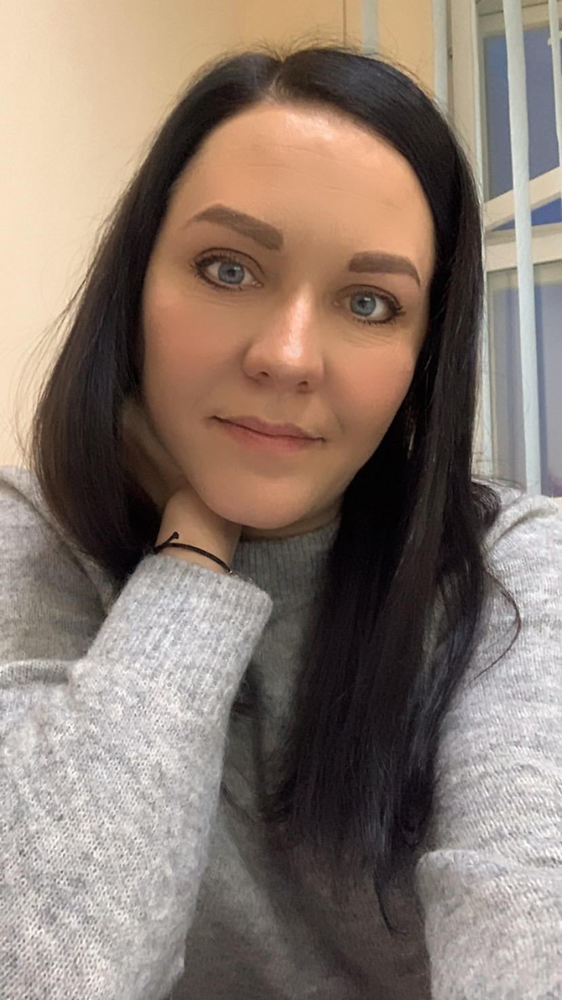

|  | Высоцкая Анастасия ВладимировнаМесто проживания: г. Минск
|
2005- 2008гг. — Белорусский Национальный Технический Университет, г.Минск
Факультет: маркетинга менеджмента и предпринимательства
Специальность: маркетолог
Форма обучения: очная
2008- 2011гг. — Белорусский Национальный Технический Университет, г.Минск
Факультет: технологий управления и гуманитаризации
Специальность: менеджер-экономист
Форма обучения: заочная
| Период и место работы | Должность | Должностные обязанности |
|---|---|---|
| 04.2006 -10.2008, УП «Дэйнти», г.Минск | мерчендайзер | выкладка товаров на торговых объектах, контроль сроков годности, введение планограмм, контроль акций |
| 11.2008 – 04.2020, УП «Дэйнти», г. Минск | специалист по маркетингу | руководство мерчендайзерами (штат: 5 человек). Проведение маркетинговых исследований. Составление планограмм, контроль выкладки, мониторинг цен конкурентов. Планирование рекламного бюджета, отчётность перед поставщиками, составление презентаций, составление счетов компенсаций. Работа с подрядчиками по созданию рекламных листовок, рекламной продукции, тв-рекламы, биллбордов и СМИ. Проведение дегустацией (торговых центрах, посольствах). Составление отчетов для руководства по продажам. Ведение блогов в социальных сетях. Составление отчетности, ведение документооборота и отчетности по расходам. Взаимодействие с другими отделами |
| 05.2020 – 12.2021, ОАО «Минский автомобильный завод» — управляющая компания холдинга «БЕЛАВТОМАЗ» | ведущий специалист (Управление статистики, анализа и развития ТПС) | сбор и свод информации по коммерческим подразделениям (бюджеты расходов и доходов, дебиторская задолженность, остатки на складах, поступление денежных средств, отчеты в Минпром) |
Ответственность и исполнительность. Бесконфликтность и стрессоустойчивость, коммуникабельность. Приветлива, внимательна. Умение работать с офисной оргтехникой, факс принтер, ксерокс. Продвинутый пользователь ПК, компьютерных программ Microsoft Word, Excel, PowerPoint, Outlook и другие программы работы с электронной почтой. Опыт работы с социальными сетями и форумами. Прошла семинары по «мерчендайзинг» и «управление отделом мерчендайзенга» в бизнес-школе XXI Век-консалт.